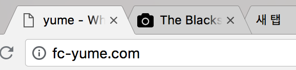
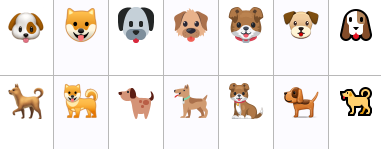
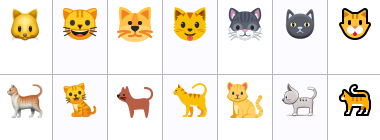
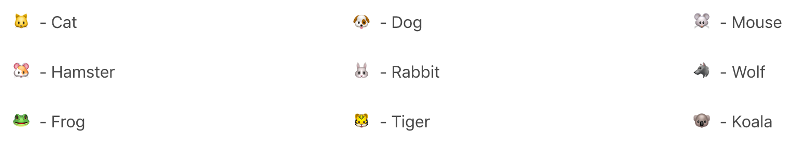
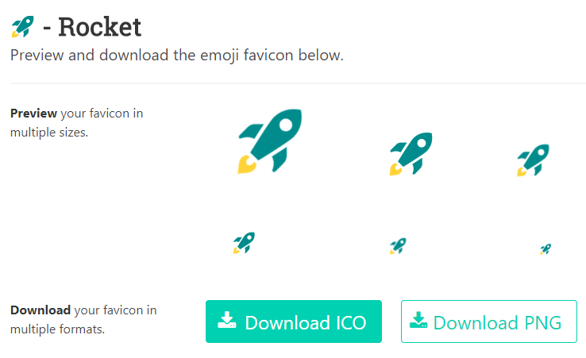
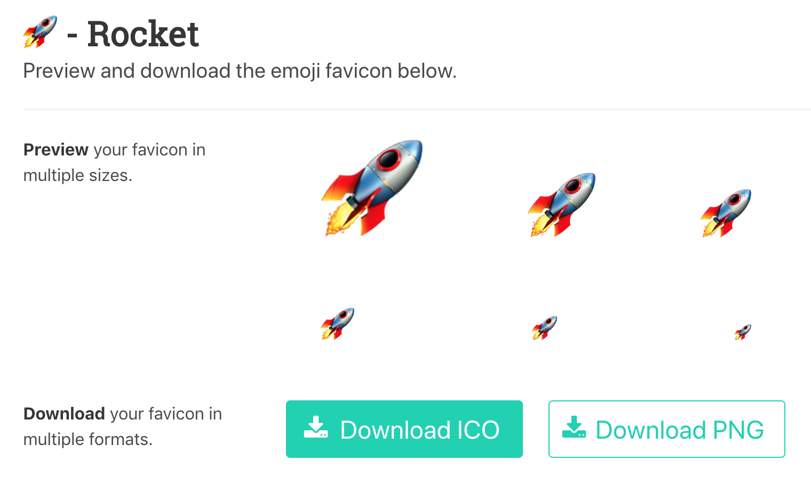

Hexo 로 블로그를 만들고 멋진 테마를 적용하셨음에도 불구하고 뭔가 빠진 듯한 느낌이 듭니다. 탭 옆이 휑하네요. 바로 파비콘(Favicon)이 없어서 그랬습니다.

파비콘은 favorites + icon 에서 나온 단어로, 해당 사이트를 대표하는 아이콘이라고 할 수 있습니다. 사실 파비콘을 만들기는 정말 쉽습니다. 파비콘을 만들어주는 다양한 사이트들이 있어서 간단한 이미지를 올리면 파비콘으로 변환해주거나 아니면 내가 직접 픽셀을 찍어서 만들 수 있는 사이트도 있습니다.
하지만 만들기는 쉬워도 고퀄은 어려운 게 파비콘입니다. 어떻게 하면 마음에 드는 파비콘을 만들 수 있을까 고민하다가 이모지(Emoji, 혹은 에모지)를 파비콘으로 쓰면 어떨까 하는 생각이 들었습니다. 이모지는 일종의 그림 문자입니다. 2010년부터 유니코드에 등록되기도 했고 표준화되서 여러가지 디바이스에서 사용이 가능합니다. 저는 아이폰 사용 중인데 카톡 이모티콘보다 이모지를 더 많이 사용하는 편입니다.
이모지는 브라우저와 플랫폼마다 조금씩 다른 이미지로 보여집니다. 강아지와 고양이가 플랫폼별로 어떻게 다르게 보이는지 보겠습니다.


지금 블로그에서 파비콘으로 쓰고 있는 로켓 이모지를 macOS 와 Windows Chrome 에서 비교해봤습니다.
이모지를 캡쳐하고 잘라서 올릴까 하다가, 찾아보니 이미 이모지를 파비콘으로 쓸 수 있도록 만들어놓은 사이트가 있었습니다!
마음에 드는 이모지 찾기
Favicon.io를 들어가면 이모지 목록이 보이는데 원하는 이모지를 선택하고 다운로드 받습니다.

파비콘 설정하기
Hexo 에서 자원을 저장하는 폴더는 source 폴더입니다. public 폴더는 generate 결과가 저장되는 폴더라 clean 시 삭제되는 폴더입니다. source 폴더 내에 파비콘으로 쓸 이미지를 넣어두고 테마 설정에서 파비콘 경로를 설정해줍니다.
저는 Hueman 테마를 사용하고 있는데요, 이 테마의 경우는 테마 폴더 내에 있는 _config.yml 파일을 수정합니다. 저는 source 폴더 내 다음과 같은 경로를 만들어 저장했습니다.
1 | favicon: /images/favicions/favicon.png # path to favicon |
물론 파비콘은 .ico 형태로 루트 폴더에 저장하는 것이 관례이지만, 저는 파비콘을 여러개 저장해놓고 바꿔가며 쓰고 싶어서 따로 폴더를 만들어 관리하기로 했습니다.
로컬 서버에서 확인해보고 실제 서버에 반영합니다.
1 | hexo server --draft |
다르게 보이는 이모지
이모지는 위에서 살펴본 것처럼 플랫폼마다 다르게 나온다는 점입니다. 재미있는 점은, 그걸 반영한 것인지 위 사이트도 접속한 환경에 따라서 보이는 이미지가 다릅니다.


어차피 실제 이모지가 아니라 저장된 이미지를 받는거라 플랫폼 별 이모지를 선택해서 다운로드할 수 있으면 더 좋았을텐데 찾아봐도 그런 옵션은 보이질 않아서 조금 아쉽습니다.
이번 포스팅에서는 이모지를 이용해서 파비콘을 만들어봤습니다.